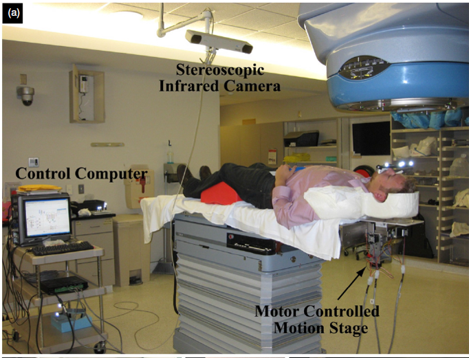
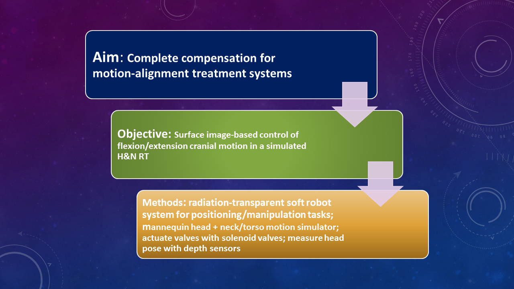
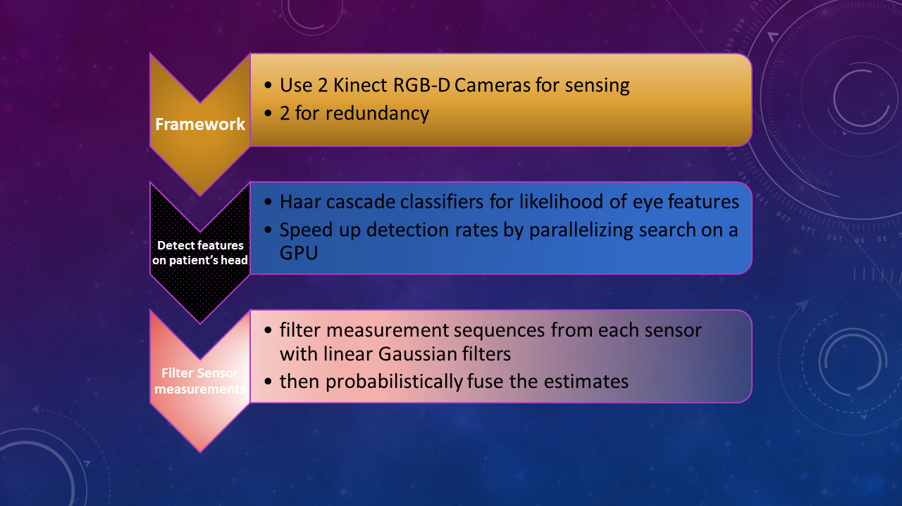
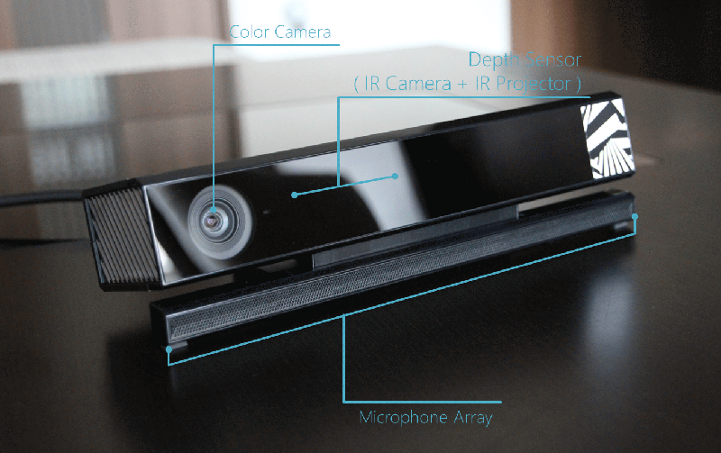
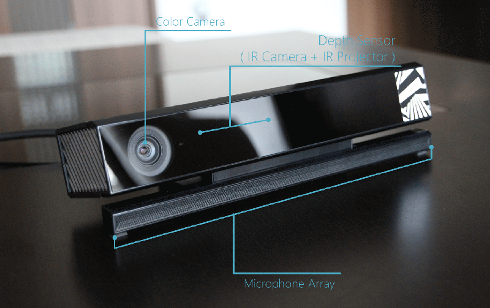
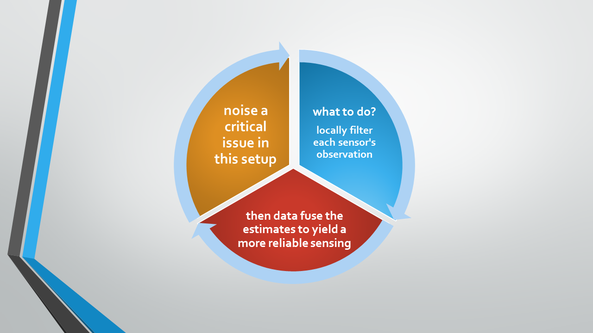
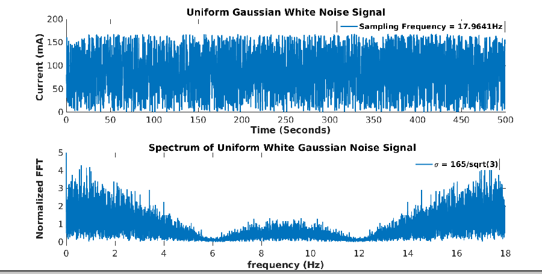
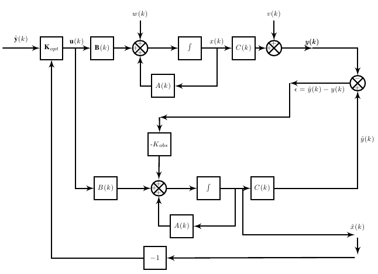
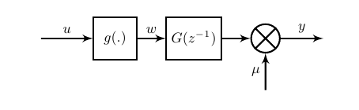

Vision-based control of a soft-robot for
Maskless Head and Neck Cancer RadiotherapyOlalekan Ogunmolu, Xuejun Gu , Steve Jiang and Nick Gans
SeRViCE Lab, UT Dallas & Radiation Oncology Department, UT SouthWestern
Background
- Head and neck (H&N) cancers among the most fatal of major cancers in the United States
- 2016: Estimated number of oral cavity and pharynx cancer projected to be 48,330
- Estimated new cases of all cancer types in 2016: 1, 685,210.
Source: Cancer Facts and Figures 2016.
Typical H&N Cancers Treatment Methods
| Methods | Pros | Cons |
|---|---|---|
| Radio-Surgery | ||
| Chemos | ||
| Radiation Therapy (RT) |
Radiotherapy for H&N Cancer Treatment (IMRT)
- Body cancer radiotherapy (RT) typically use IMRT or IGRT
IGRT: Image-Guided RT
IGRT: Image-Guided RT
 image adapted from Cervino et al's workRelated Work
- Cervino et al. 2010: Tested accuracy of IGRT systems without rigid frames on face using deformable masks
- Compared results from an infra-red optical tracking system with the AlignRT vision software system


| Results | Solution drawbacks |
|---|---|
|
|
|
|
|
Research Overview

Vision-based Head Position Estimation
Kinect Sensors
 

Depth Map from the two Sensors

Sensors' Limitations and Prognostics
-
Reference: Paul Viola and Michael Jones. Rapid Object Detction using a Boosted Cascade of Simple Features. 2001.
Local Linear State Estimators
Problem Statement: Given the continuous-valued state of the measurements, statistically model how the observations from each sensor change over time.
- Find the state estimates $\hat{\textbf{x}}(i)$ that minimize the mean-squared error to the true sensors' state $\textbf{x}(i)$, conditioned on the observation sequence, $z(1), \cdots, z(j)$
- i.e., find \begin{align} \label{eq.est_expt} \hat{\textbf{x}}(i|j)&= \text{arg } \min_{\hat{\textbf{x}}(i|j)\in \mathbb{R}^n} \mathbb{E}\{(\textbf{x}(i) - \hat{\textbf{x}})(\textbf{x}(i) - \hat{\textbf{x}})|z(1), \cdots, z(j)\} \nonumber \\ &\triangleq\mathbb{E}\{\textbf{x}(i)|{z}(1), \cdots, {z}(j)\} \triangleq\mathbb{E}\{\textbf{x}(i)|{Z}^j\} \end{align} with covariance defined as \begin{align} \textbf{P}(i|j)\triangleq \mathbb{E}\{(\textbf{x}(i) - \hat{\textbf{x}}(i|j)(\textbf{x}(i) - \hat{\textbf{x}}(i|j)^T | Z^j\}. \end{align}
Sensors Model
- assume model of the state transition matrix, $F_k$, is common to both sensors
- assume an unknown process noise, $G_k$
- let $\textbf{x}(k)=[d(k),\,\dot{d}(k)]^T \in \mathbb{R}^2$ be the state vector of interest
- if $\Delta T $ be the time between steps $k-1$ and $k$
State Modeling procedure
-
it follows that
\begin{equation}
\textbf{x}_k = \textbf{F}_k\textbf{x}_{k-1}+\textbf{B}_k\textbf{u}_k+\textbf{G}_k\textbf{w}_k
\label{eq:state_model}
\end{equation}
where $\textbf{F}(k) \in \mathbb{R}^{2\times 2}$ is the state transition matrix given by \begin{equation} \textbf{F} = \begin{bmatrix} 1 & \Delta T \\ 0 & 1 \end{bmatrix} \end{equation}
$\textbf{u}(k) \in \mathbb{R}^2$ is the control input, $\textbf{B}(k)$ is the control input matrix that maps inputs to system states, $\textbf{G}(k) \in \mathbb{R}^{ 2 \times 2}$ is the process noise matrix, and $\textbf{w}(k) \in \mathbb{R}^2$ is a random variable that models the state uncertainty
-
note that $u(k)$ = 0 so that the model evaluates to
\begin{align}\label{eq.accelmodel} \textbf{x}_k = \textbf{F}_k \textbf{x}_{k-1}+ \textbf{G}_k \textbf{w}_k \end{align}
$ \textbf{w}_k$ is the effect of an unknown input causing an acceleration $a_k$ in the head position and $ \textbf{G}_k$ applies that effect to the state vector, $ \textbf{x}_k$
Sensors' State Uncertainty Model
-
setting $\textbf{G}_k$ to identity and set $\textbf{w}(k) \sim \mathcal{N}(0, \textbf{Q}(k))$,
-
the covariance matrix $\textbf{Q}(k)$ to a random walk sequence defined as $\textbf{W}_k={[\frac{{\Delta T}^2}{2}, \Delta T ]}^T$
- we find that, \begin{align} \textbf{Q} &= \textbf{W}\textbf{W}^T{\sigma_a}^2 = \begin{bmatrix} \dfrac{{\Delta T}^4}{4} & \dfrac{{\Delta T}^3}{2} \\ \dfrac{{\Delta T}^3}{2} & {\Delta T}^2 \end{bmatrix}{\sigma_a}^2. \end{align} where ${\sigma_a}^2$ denotes the variance of the measurement sequence
State Output Model
-
we transform kinect Xbox's observations, $z_1(k)$, into kinect v1's observation, $z_2(k)$, using the relation
\begin{equation}\label{eq:sensors_obs} {z}_s= \textbf{H}_s(k)\textbf{x}(k)+{v}_s(k) \qquad \qquad s = 1,2 \end{equation}
- The linear Kalman filter prediction and update phases are computed at every time step based on the prediction and update KF equations
set $\textbf{H}_s(k) ={\begin{bmatrix} 1 & 0 \end{bmatrix} }^T$ maps the system's state space into the observation space
${v}_s(k) \in \mathbb{R}$ is a normally distributed random variable that models the sensors uncertainty with zero mean and variance $\sigma_{rs}^2$
Kalman Filtering Results


-
Multisensor Kalman Fusion algorithm
\begin{align}
\hat{\textbf{x}}_{F}(k|k) &= \textbf{P}_{F}(k|k)\sum\limits_{i=1}^{N}\left[{\textbf{P}_s}^{-1}(k|k)\hat{\textbf{x}}_s(k|k)\right] \nonumber \\
\text{where } \textbf{P}_{F}(k|k) &= \left[\sum\limits_{i=1}^{N} {\textbf{P}_s}^{-1}(k|k)\right]^{-1}
\end{align}
and $\textbf{P}_s$ are the covariance matrices for each sensor state's uncertainty.
Kalman Fusion Results

Overall System Model Framework
- use fusion estimate from the two sensors for feedback control
- model system using a predictive error supervised learning framework
- apply a linear quadratic gaussian to control the bladder in real-time
System Identification
- From lagged input-output data $Z^N = \{u(1) \cdots u(N) \quad y(1) \cdots y(N)\}$to be collected; find the best model from a set of candidate model sets
- $y(i)$ is the fused track estimate and $u(i)$ = current to the pneumatic valve
- assume model structure is a differentiable mapping from a connected, compact subset $\mathcal{D}_{\mathfrak{M}}$ of $\mathcal{R}^d$ to a model set $\mathfrak{M}^*$, such that the gradients of the predictor functions are stable
Identification procedure
- we seek a stochastic state space sequence of the form \begin{align} \label{eq:sysid_stochss} \mathbf{x}(k+1) = \mathbf{A x} (k) + \mathbf{B u}(k) + \mathbf{w}(k) \nonumber \\ \mathbf{y}(k) = \mathbf{Cx}(k) + \mathbf{Du}(k) + \mathbf{v}(k) \end{align}
- estimate states $\mathbf{x}(k)$ and from measurable units $u$ and $y$ and transform problem to a regression problem of the form \begin{align} \label{eq:sys_idstate_minimal} Y(k) = \Theta \Phi(k) + E(k) \end{align}
- all the unknown matrix entries are linear combinations of measured inputs and output variables
$\mathbf{w}(k) \text{ and } \mathbf{v}(k)$ compensate for system disturbances and model uncertainties
-
where
\[ Y(k) = \left[ \begin{array}{c}
\mathbf{x}(k+1) \\
\mathbf{y}(k)
\end{array} \right],
%
\hspace{0.3em}
%
\Theta= \left[ \begin{array}{cc}
\mathbf{A} & \mathbf{B} \\
\mathbf{C} & \mathbf{D}
\end{array}\right]
\]
\[\Phi(k) = \left[\begin{array}{c}
\mathbf{x}(k) \\ \mathbf{u}(k)
\end{array} \right] \hspace{0.2em} \text{ and }
%
{E}(k) = \left[ \begin{array}{c}
\mathbb{E}(w(k)) \\
\mathbb{E}(v(k))
\end{array}\right].
\]
- Assumption: Noise model is white $\rightarrow$ unbiased model
- Estimate $\mathbf{A}, \mathbf{B}, \mathbf{C}, \text{ and } \mathbf{D}$ matrices by linear least squares regression
- Estimate $\mathbb{E}(\mathbf{w}(k))$ and $\mathbb{E}(\mathbf{v}(k))$ as a sampled sum of squared errors of the residuals
Parameter Estimation
- Xtize $u(k)$ and $y(k)$ as a linear difference equation of the form \begin{eqnarray}\label{eq:lineardiff} y(k) &=-a_1y(k-1)-\cdots-a_{n_a}y(k-n_a) \nonumber \\ & -b_1u(k-1) - \cdots -b_{n_b}u(k-n_b) -e(k) \nonumber \\ &-c_1e(k-1) -c_{n_c}e(k-n_c) \end{eqnarray}
- rearranging the equation above, we have an ARMAX model of the form \begin{align}\label{eq:sysid_TF} \hat{y}(k) &= G(q, \theta)u(k) + H(q, \theta)\hat{e}(k) \\ \text{where} \quad G(q, \theta) &= \dfrac{B(q)}{A(q)},\text{ } H(q, \theta) = \dfrac{C(q)}{A(q)} \nonumber \end{align}
- $A(q)$, $B(q)$, and $C(q)$ are regression polynomials
Identification Experiment
- search for signal that will excite system across all desired frequency spectrum for control design

Identification Experiment
- so we excite the valve with the UWGN signal in an open-loop informative experiment
- and collect enough samples to ensure $\lim_{N\to\infty} Z^N \rightarrow \hat{\theta}^N$
- define lagged predictions as $$\hat{Y}_r(k) = [\hat{y}(k|k-1), \cdots, \hat{y}(k+r-1)| k -1 ]^T$$ $$\hat{Y} = [\hat{Y}_r(1) \cdots \hat{Y}(N)],$$ such that
- as $N \rightarrow \infty$, there are $n$-th order minimal state space descriptions of the system if and only if the rank of the matrix of prediction vectors, $\hat{Y}$, is equal to $n$ for all $r \geq n$; and
Identification Experiment
- From the model tinkering, we settled for a second-order state-space model \begin{align} \label{eq:statemodel} \textbf{x}(k+Ts) = \textbf{A} \textbf{x}(k) + \textbf{B} \textbf{u}(k) + \textbf{K} \textbf{e}(k) \nonumber \\ \textbf{y}(k) = \textbf{C} \textbf{x}(k) + \textbf{D} \textbf{u}(k) + \textbf{e}(k) \end{align} where $Ts$ is the sampling period, $\textbf{e}(k)$ is the modeled zero-mean Gaussian white noise with non-zero variance
- \begin{align} \label{eq:ControlSSModel} \textbf{A} = \begin{bmatrix} 0 & 1 \\ -0.9883 & 1.988 \end{bmatrix}, \hspace{0.4em} \textbf{B} = \begin{bmatrix} -3.03e-07 \\ -4.254e-07 \end{bmatrix} \nonumber \\ \textbf{C} = \begin{bmatrix} 1 & 0 \end{bmatrix}, \hspace{0.4em} D = 0, \text{and} \hspace{0.4em} \textbf{K} = \begin{bmatrix} 0.9253 & 0.9604 \end{bmatrix}^T. \end{align}
Control Design
- Choose an LQG controller and estimator to minimize the following cost function subject to the state equation above \begin{equation} \label{eqn:LQ-cost} J = \sum\limits_{k=0}^{\mathcal{K}} x^T(k)\,Q\,x(k) + R \, u(k)^T \, u(k) + 2 x(k)^T \, N \, u(k) \end{equation}
- $J$ is a quadratic cost funtional. Minimizing $J$ allows us to find the appropriate controller over the output prediction horizon, $n_y$ \begin{equation} \label{eqn:min J} \Delta u = \text{arg } \underset{\Delta u}{\text{min }}J \end{equation}
- To make a robust controller, stick an additive white noise sequence into the discrete estimator's states
- $\rightarrow$ problem becomes a non-deterministic optimization problem that must be solved.
Control Design
- By the separation theorem, we can separately construct an estimator which asymptotically tracks the internal states of the observed fused estimates
-
the algebraic Ricatti equation,
\begin{equation} \label{eqn:Riccati} \begin{split} A^T P A \mbox{-}(A^T P B \mbox{+} N)(R \mbox{+} B^T P B)^{-1}(B^T P A \mbox{+} N) \mbox{+} & Q, \end{split} \end{equation}
allows us to solve for the optimal control law through a minimization of the resulting LQ problem - $P$ is an unknown $n \times n$ symmetric matrix and $A$, $B$ are known coefficient matrices from the control model
- $Q$ is a matrix that weights the states of the model while $R$ is a symmetric. [positive-definite matrix that weights the control vector $u$.
Control Space Search
- First set $Q$ to identity, then tune $R$ till "satisfactory" convergence is obtained
-
We found the following values to work well for our control objective
\begin{align} Q = \begin{bmatrix} 1.0566 & 0 \\ 0 & 1.0566 \end{bmatrix} \hspace{0.4em} R = \begin{bmatrix} 0.058006 \end{bmatrix} \end{align}
LQG Block
full online state estimator with noise processes assumed to be independednt, white Gaussian
Control Design
- The optimal controller gains, $K_{opt}$, are determined using \begin{equation} K_{opt} = {R}^{-1}(B^T \, P + N^T) \end{equation} where $P$ is the solution to the algebraic Riccati equation and $ \mathbb{E}[w(k)w'(\tau)] = R(k) \delta(k-\tau). $ [Andersen et. al.]
-
The online optimal estimate, $\hat{x}(k+1)$ of $x(k)$, is given by
\begin{align} \hat{x}(k+1) = A(k)\hat{x}(k) + K_{lqg}\left[C(k)\hat{x}(k)-y(k)\right] \end{align} where $\hat{x}(k_0)=\mathbb{E}\left[x(k_0)\right]$ - The observer is equivalent to a discrete Kalman filter which estimates the optimal state $\hat{x}(k|k)$
Experiment
- use fused estimate from kalman fusion to track head posityion in real-time; input variable is current that excites valve; which actuates bladder
- deploy control network on NI-RIO microcontroller; head moves in response to controller actuation
- eliminate settling-time delay from sensors by starting the fusion algorithm well before the controller network
LQG Controller on Manikin Head
LQG Controller on Manikin Head
Future Work
- use a block-structured Hammerstein model to better approximate the input-states non-linearity  where the $g(.)$ block represents the static nonlinearity that maps inputs to states while the $G(z^{-1})$ block maps the linear dynamics of the system's states to the sensors' measurements
- Introduce a recursive learning identifier which continualy tunes the parameters of the model to arive at better control results
Summary and conclusions
- fusing data from multiple depth sensors can achieve results that scale well to clinical radiotherapy research
- fusion results from our experiments proved to be an effective cancellation of jitter and from a low-cost depth sensor such as kinect.
- it also shows we can achieve an accuracy of 2.5mm by actuating a single bladder with our set-up
Summary and conclusions
- effective clinical head localization during experiments require higher resolution sensors
- further investigate accurate multi-axis positioning using control of multiple bladders, nonlinear modeling/model free-methods to overcome limitations of the LTI model
References
- Gokturk, S. B., Yalcin, H., & Bamji, C. (2004). A Time-Of-Flight Depth Sensor - System Description, Issues and Solutions. http://doi.org/10.1109/CVPR.2004.17
- Cervino, L.I., Pawlicki, T., Lawson, J.D., Jiang, S.B., Frame-less and mask-less cranial stereotactic radiosurgery: a feasibility study. Phys. Med. Biol. 55 (2010). 1863-1873.
- Prostrate Cancer Center: http://www.prostatecancercenterpa.com/imrtigrtbenefits.html
- Shotton, J., Sharp, T., Kipman, A., Fitzgibbon, A., Finocchio, M., Blake, A., … Moore, R. (2013). Real-Time Human Pose Recognition in Parts from Single Depth Images. CoMMuNiCatioNs of tHe aCM, 56(1). http://doi.org/10.1145/2398356.2398381
- Takakura, T., et al., The geometric accuracy of frameless stereotactic radiosurgery using a 6D robotic couch system. Phys Med Biol, 2010
- Xing, L., Dosimetric effects of patient displacement and collimator and gantry angle misalignment on intensity modulated radiation therapy. Radiother Oncol, 2000. 56(1): p. 97-108.
Thank You!
Slides available at the author's website.